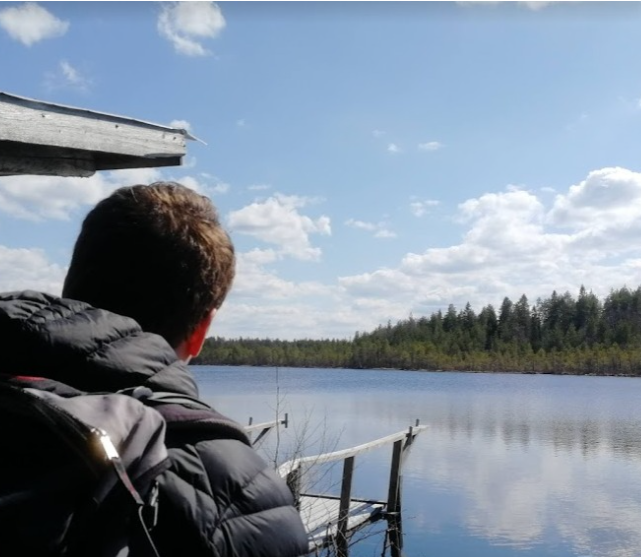

Profiilini
Etsin tällä hetkellä kesäharjoittelupaikkaa tai pysyvää työpaikkaa konetekniikan alalta. Asun tällä hetkellä Oulussa, mutta valmistun keväällä 2021 ja olen valmis muuttamaan tarpeen mukaan. Olen erityisesti kiinnostunut mekaniikkasuunnittelusta, mutta olen avoin myös muita työtehtäviä kohtaan, kunhan pääsen työskentelemään projekteissa tai suunnittelutehtävissä.
Vaikka olen melko tuore tulokas konetekniikan alalla, olen edistynyt opinnoissani nopeasti ja erinomaisin arvosanoin. Tulen myös suorittamaan DI-tutkinnon muutaman seuraavan vuoden kuluessa. Minulla on laajalti aiempaa työkokemusta ja olen työskennellyt ulkomailla yhteensä kuudessa eri maassa, joten kommunikointi-, vuorovaikutus ja kielitaitoni ovat erittäin hyvät. Tällä sivulla saat lisätietoja osaamisestani ja kokemuksestani.
Koulutus
Konetekniikan insinööri08/2018 - 04/2021
Oulun Ammattikorkeakoulu (OAMK) - Suuntautuminen: Koneautomaatio ja koneensuunnittelu
Painotettu keskiarvo: 4,65 - Opintosuoritusotteeni
TradenomiValmistunut 2011
Saimaan Ammattikorkeakoulu - Suuntautuminen: International Business
Painotettu keskiarvo: 3,75
Työkokemus
Opinnäytetyöntekijä10/2020 – 03/2021
Head Recycle Systems Oy
Tuotesuunnitteluprojekti/Insinöörityö - NIR Spektrometriskanneri. Lisätietoja.
Laitossuunnittelun kesäharjoittelija05 – 09/2020
Outotec Oyj – Espoo
Mineraalien ja metallien jalostuslaitosten mekaaninen suunnittelu ja lay-out suunnittelu. PI-kaaviosuunnittelu ja prosessisuunnittelun avustavat tehtävät useissa jalostuslaitosprojekteissa.
Tuotantotekniikan kesäharjoittelija05 – 09/2019
Lantmännen Unibake Finland – Lappeenranta
Tuotannonohjaukseen- ja suunnitteluun liittyvien tietoteknisten ongelmien ratkominen. Tiedonvälitysjärjestelmän kehittäminen sekä automaattisten pakkausprosessien kehitystyö.
Service Desk Analyst09/2016 – 08/2018
HCL Sweden AB – Gothenburg, Sweden
Tuotannonohjaukseen liittyvien ohjelmistojen, tietoteknisten laitteiden ja Windowsin käyttötuki, vikatilanteiden analysointi ja ratkaisu.
Customer Relations Specialist09/2012 – 09/2016
Runway BPO - Kaunas, Lithuania & Malága, Spain
Lentoyhtiöiden asiakkaiden vahinko- ja korvausvaatimusten käsittely. Uusien työntekijöiden koulutus ja koulutusmateriaalin suunnittelu.
Ohjelmistotaidot
Microsoft Office - Excel, Word, Powerpoint, VisioErinomainen
SolidWorksEdistynyt
AutoCAD, Inventor & Bentley MicrostationHyvä
Siemens NX, CatiaPerusteet
Autodesk Robot Structural AnalysisHyvä
C/C++/Python, CSS, Javascript & HTMLAloittelija/Harrastelija
Kielitaidot
Suomi Äidinkieli
EnglishÄidinkielentasoinen
SwedishHyvä
SpanishHyvä
GermanHyvä
FrenchAlkeet
Kurssit
Työturvallisuuskortti 09/2023
Tulityökortti 10/2023
Sähkötyöturvallisuuskortti 12/2024
Harrastukset
3D Suunnittelu
Ohjelmointi
Vaellus
3D Tulostus
Lenkkeily
Sulkapallo
Arduino
Uinti
Kalastus